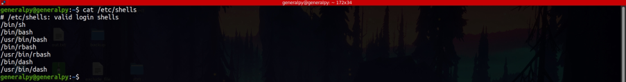
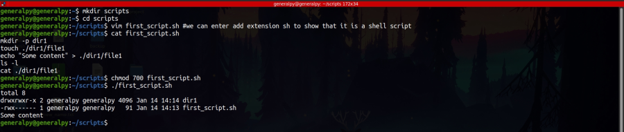

There are diffrent shells available. To list all shells that are avialable in a system, list contents of /etc/shells file.

Different users can have diffrerent default shells. Each user defualt shell is listed in last column in /etc/passwd file.
Shell script is basically an executable text file which contains shell commands and extra valid constructs like variables, conditionals, loops etc. which are executated sequentially.
Shell scripts are extremely useful. They can help us to save time by putting complex and repetetive commands into a bash script. They also help us to provide abstraction. A senior admin can write a script and then junior admin can use that script without knowing its internals and can perform the task successfully.

Here we created an script with name of first_script. We can add optional extension sh to bash script for human redability tho it is not required. Then we entered commands into that script. We have to make script as executable if we need to run it.
We then ran the script by entering its relative path(absolute path can also be used). We cannot simply write name of command to run it as bash will think that it is a bash command and will search its name in path variable.
To list contents of path variable use :
echo $PATH